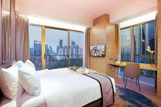
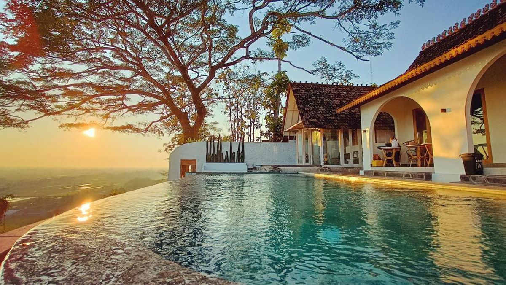

Hotel: Menjadi Oase Kenyamanan dan Hospitalitas dalam Perjalanan Anda

Hotel, sebagai bentuk penginapan yang telah menjadi bagian tak terpisahkan dari perjalanan, tidak hanya sekadar tempat bermalam. Lebih dari itu, hotel adalah titik temu antara kenyamanan, layanan berkualitas, dan pengalaman perjalanan yang tak terlupakan. Hotel menyediakan kamar-kamar yang dirancang untuk memberikan kenyamanan seperti di rumah. Tempat tidur yang nyaman, kamar mandi pribadi, dan fasilitas modern adalah bagian integral dari pengalaman menginap di hotel. Kebersihan dan kerapian kamar adalah prioritas utama hotel. Pelayanan kebersihan yang baik memberikan tamu rasa nyaman dan dapat bersantai sepenuhnya selama menginap. Hotel menyediakan layanan resepsionis 24 jam sehari, memberikan kenyamanan kepada tamu yang tiba atau pergi pada berbagai waktu. Resepsionis yang ramah siap membantu dengan segala kebutuhan tamu. Hotel sering menawarkan fasilitas kebugaran seperti pusat kebugaran yang dilengkapi dengan peralatan modern dan kolam renang untuk tamu yang ingin tetap aktif selama perjalanan. Layanan spa dan kecantikan di hotel memberikan kesempatan bagi tamu untuk bersantai dan merawat diri. Pijat dan perawatan kecantikan menambah sentuhan khusus pada pengalaman menginap. Keamanan yang Diutamakan. Hotel memiliki sistem keamanan yang canggih untuk melindungi tamu dan harta benda mereka. Ini menciptakan rasa aman dan nyaman selama menginap. Banyak hotel menawarkan program loyalitas yang memberikan keuntungan seperti diskon, penawaran khusus, atau peningkatan kamar untuk tamu yang sering menginap.
Membaca ulasan dari tamu sebelumnya dan memperhatikan peringkat hotel dapat membantu Anda membuat keputusan yang lebih baik.
Pastikan hotel menyediakan fasilitas yang sesuai dengan kebutuhan dan preferensi Anda, seperti Wi-Fi gratis, sarapan, atau parkir.
Pemesanan lebih awal seringkali membawa keuntungan berupa harga lebih murah dan pilihan kamar yang lebih baik.
Jika sering bepergian, pertimbangkan untuk bergabung dengan program loyalitas hotel untuk mendapatkan keuntungan ekstra.
Jika Anda memiliki permintaan khusus, seperti kamar dengan pemandangan tertentu atau permintaan diet khusus, lebih baik menghubungi hotel secara langsung.Keamanan yang Diutamakan
Hotel memiliki sistem keamanan yang canggih untuk melindungi tamu dan harta benda mereka. Ini menciptakan rasa aman dan nyaman selama menginap.
Banyak hotel menawarkan program loyalitas yang memberikan keuntungan seperti diskon, penawaran khusus, atau peningkatan kamar untuk tamu yang sering menginap.
Tips Memilih dan Menikmati Hotel:
Cek Ulasan dan Peringkat:
Membaca ulasan dari tamu sebelumnya dan memperhatikan peringkat hotel dapat membantu Anda membuat keputusan yang lebih baik.
Periksa Fasilitas yang Ditawarkan:
Pastikan hotel menyediakan fasilitas yang sesuai dengan kebutuhan dan preferensi Anda, seperti Wi-Fi gratis, sarapan, atau parkir.
Pesan Lebih Awal:
Pemesanan lebih awal seringkali membawa keuntungan berupa harga lebih murah dan pilihan kamar yang lebih baik.
Manfaatkan Program Loyalitas:
Jika sering bepergian, pertimbangkan untuk bergabung dengan program loyalitas hotel untuk mendapatkan keuntungan ekstra.
Hubungi Hotel Langsung untuk Permintaan Khusus:
Jika Anda memiliki permintaan khusus, seperti kamar dengan pemandangan tertentu atau permintaan diet khusus, lebih baik menghubungi hotel secara langsung.
Dalam perjalanan, hotel bukan hanya tempat untuk beristirahat, tetapi juga menjadi pusat pengalaman dan kenangan. Pilihlah hotel dengan bijak, sesuaikan dengan kebutuhan dan selera Anda, dan nikmatilah setiap momen di tempat penginapan yang menyediakan kenyamanan dan keindahan selama perjalanan Anda.
Dalam perjalanan, hotel bukan hanya tempat untuk beristirahat, tetapi juga menjadi pusat pengalaman dan kenangan. Pilihlah hotel dengan bijak, sesuaikan dengan kebutuhan dan selera Anda, dan nikmatilah setiap momen di tempat penginapan yang menyediakan kenyamanan dan keindahan selama perjalanan Anda.
Vila: Rekreasi Mewah di Balik Tembok Privasi

Vila, sebagai bentuk penginapan mewah, tidak hanya sekadar tempat bermalam, melainkan juga menciptakan pengalaman tinggal yang eksklusif dan pribadi. Vila menawarkan ruang pribadi yang lebih besar daripada kamar hotel biasa. Dengan beberapa kamar tidur, ruang tamu, dapur, dan bahkan kolam renang pribadi, tamu dapat menikmati kenyamanan dan kebebasan yang tak terbatas. Beberapa vila menawarkan layanan pelayan dan koki pribadi, menciptakan pengalaman tinggal yang serba terlayani dan santai.
Sebagian besar vila terletak di lokasi-lokasi eksklusif, seperti tepi pantai, perbukitan yang tenang, atau di tengah kebun-kebun hijau. Ini memberikan tamu pilihan pemandangan yang luar biasa.
Beberapa vila memiliki akses langsung ke pantai pribadi atau taman yang indah, menciptakan atmosfer yang menenangkan dan memanjakan tamu.
Pertimbangkan jumlah kamar yang Anda butuhkan, fasilitas yang diinginkan, dan lokasi yang diinginkan sebelum memesan vila.
Membaca ulasan dari tamu sebelumnya dapat memberikan wawasan tentang pengalaman menginap di vila tersebut.
Pastikan vila menyediakan fasilitas yang Anda inginkan, seperti kolam renang, akses ke pantai, atau layanan pelayan.
Jika Anda memiliki permintaan khusus, seperti layanan koki pribadi atau pengaturan acara khusus, lebih baik menghubungi manajemen vila secara langsung.
Memastikan ada kegiatan atau tempat menarik di sekitar vila dapat memperkaya pengalaman menginap Anda.
Vila sebagai penginapan tidak hanya menawarkan kenyamanan dan kebebasan, tetapi juga menjadi panggung untuk pengalaman tinggal yang istimewa. Mengeksplorasi keindahan alam sekitar atau sekadar bersantai di kolam renang pribadi, vila menciptakan kenangan yang melekat dan memastikan pengalaman menginap yang tak terlupakan. Jadi, bersiaplah untuk menikmati kemewahan dan kenyamanan yang hanya bisa ditemukan di vila eksklusif.
ChatGPT can make mistakes. Consider checking important information.
Resort: Destinasi Liburan Sempurna yang Menawarkan Kemewahan dan Rekreasi
Resort bukan hanya sekadar tempat bermalam; itu adalah pengalaman liburan lengkap yang menggabungkan kemewahan, kenyamanan, dan rekreasi di tengah pemandangan alam yang menakjubkan. Resort menawarkan kamar dan suite yang dirancang untuk memberikan kenyamanan tingkat tinggi. Tempat tidur yang nyaman, perabotan yang elegan, dan fasilitas modern menciptakan atmosfer mewah. Sebagian besar resort menyediakan vila atau bungalow eksklusif dengan fasilitas pribadi seperti kolam renang, taman, atau akses langsung ke pantai.
Pertimbangkan tema liburan Anda, apakah itu bersantai di tepi pantai, berpetualang di pegunungan, atau mengeksplorasi kehidupan kota.
Pastikan resort menyediakan fasilitas yang sesuai dengan kebutuhan dan preferensi Anda, seperti spa, restoran, atau kolam renang.
Resort sering menawarkan paket liburan atau penawaran spesial yang dapat memberikan nilai tambah untuk pengalaman menginap Anda.
Pemesanan lebih awal dapat memberikan Anda harga yang lebih baik dan memastikan ketersediaan kamar atau vila yang diinginkan.
Rencanakan untuk menjelajahi aktivitas di sekitar resort, seperti wisata lokal atau kegiatan rekreasi yang ditawarkan oleh resort.
Dari tepi pantai yang indah hingga kehidupan kota yang sibuk, resort memberikan pilihan liburan yang luas dan menjanjikan. Dengan kemewahan, kenyamanan, dan keberagaman fasilitas, resort membuka pintu bagi pengalaman liburan yang tak terlupakan. Jadi, bersiaplah untuk menemukan surga liburan di resort yang cocok dengan selera dan impian liburan Anda.
ChatGPT can make mistakes. Consider checking important informati